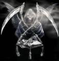

Forums galactiques > Taverne galactique : lieu de discussion informel > histoire
l\'abbé ramouflon 13/12 ETU 10:07  | un hippocampe !!! |
ultremis_ 13/12 ETU 10:30 | qui nageait dans un ... |
l\'abbé ramouflon13/12 ETU 11:09 | jus de tympan porté a ébulition et pourtant il semblait selon toute vraissemblance que ... |
cortana 13/12 ETU 12:02 | il sentait mauvais mais.... |
Kela 13/12 ETU 17:50 | parlait, et se déplaçait sans peine, presque comme un humain car... |
Necrid 13/12 ETU 17:56 | il avait développé cette capacité au contact du très célèbre dompteur Marcel ben Marcel qui s'était fait connaître du grand public par une adaptation très osée de... |
Kela13/12 ETU 18:00 | Starwars, une épopée préhistorique. Il avait transformé une magnifique jeune fille en horrible nain vert à la stupeur du public... |
Necrid13/12 ETU 18:11 | qui était venu pour la voir prendre des poses lascives et non pour la voir se transformer en laideron repoussant... |
Kela13/12 ETU 18:18 | Il etait une fois, un nain dans une foret. Ce nain transportait un jambon et de la bière. Malheureusement, il mourut. FIN. Mais il ressuscita la troisième heure, conformément au papyrus sacré qui se trouvait dans le sarcophage d'une vieille momie, momie qui malgré toutes les avanies qu'elle subissait avait encore son mot à dire... La momie, du temps où elle n'était pas une momie, avait entendu parler de ce nain. Ce nain était né sur une mystérieuse planète de la Périphérie galactique, où il y avait vécu une enfance tout à fait banale, jusqu'au jour où un vent solaire ravagea les trois-quarts de sa planète, le poussant à fuir. Il connut alors l'exil et ses affres : abandonné de tous, sur une planète où il ne connaissait personne, il sombra dans la misère sentimentale et sexuelle. Aucune femme ne le désirait : il avait beau se démener en fréquentant les pires tripots jouxtant les hangars, ses nuits étaient mornes, silencieuses, désespérantes jusqu'au jour où, en allant au marché pour acheter du jambon et de la bière, ses deux seuls plaisirs des sens restants, vint l'accoster une magnifique jeune femme. D'où venait-elle ? Nul ne savait... Toujours est-il que d'un simple regard, il en tomba éperduement amoureux, mais ce qu'il ne savait pas, c'est que elle avait la haine et que donc elle en profiterait pour le traiter comme un chien. Etait-elle perverse ? Nul ne sait. Mais écoutez cela, le soir même, alors qu'il l'avait invitée dans un modeste estaminet,avant même de commander à boire, elle le poussa violemment contre le mur et pressa ses seins contre son visage. Surpris de tant de violence, notre pauvre nain se demandait si ses maigres capacités sexuelles lui permettraient de satisfaire la belle - à la pilosité faciale innatendue, soit dit en passant. Il se demandait aussi si son emportement était lié à une différence culturelle des femmes par rapport aux femmes décédées de sa planète native ou si vraiment elle était attirée par sa petite taille. Une légende raconte en effet que les nains bavarois amateurs de bière et de jambon ne sont affectés d'aucun préjugé envers les métis mi-homme mi-babouin québécois, espèce rare mais glorieuse dont notre belle était une éminente représentante. - Mais quand elle le vit a l'acte elle s'enfuya en courant... Non, cher interrupteur, elle ne s'enfuit pas car elle était sur le point de défaillir, sous l'effet de l'odeur du jambon à l'ail et de la bière rance que notre ingérait en quantités déraisonnables. Le nain prit pour un émoi son tassement, en fait lié à un dégoût et cria alors : - Deux Vodka "Copernik" à la table 69 ! Le tavernier déplaça sans précipitation sa corpulence jusqu'à la table 69, et servit aux tourteraux une vodka pour la dame et un jus de carotte pour le petit qui n'avait pas l'air majeur. La demoiselle avala la vodka d'un trait pour se remettre et elle s'etouffa et mourut sur le coup, les ambulanciers galactiques arivèrent trop tard. Le nain, après le choc de cette mort, eut peur d'être accusé et alla se cacher derrière une momie que le bar gardait en relique. On disait qu'il s'agissait des derniers restes d'un Commandant omnipotent qui, tel Attila, détruisait tout sur son passage. Sa curiosité piquée, le nain regarda avec plus d'attention la momie. Ce qu'il vit le glaça d'horreur... Etant de petite taille, il observa la momie sous un angle très différent de celui de la plupart de ceux des clients érudits qui s'y étaient intéressés jusqu'alors, et vue sous cet angle, la momie ne disposait pas de tous ses attributs. En effet, il lui manquait les petits talismans et autre protection que l'on met sous les bandelettes d'une momie et que l'on ne saurait voir de face; mais de dessous, le nain voyait clairement qu'elles n'y étaient pas ! Dérobées? A moins que-mais ça serait terrifiant! Il eut encore peur d'etre accusé de vol en plus de meurtre, il prit sa hache et dans un moment de panique et d'insatisfaction détruisit la moitié de l'établissement avant que qui que ce soit ne le voit et appelle. Il sortit furtivement dans la rue, s'appuya sur le mur essouflé, repensa à sa belle dont le corps traînait encore dans le bar et réfléchit avec panique au mystère des talismans. Il songea : il n'y avait plus le scarabée rituel... Cela voulait-il dire que... ? Mais, mais, dans ce cas, c'était terrible ! cela signifiait que cette momie était maudit!! Allait-il être victime d'une malédiction ? Et cela signifiait que du jus de stimulo allait sortir de ses oreilles jusqu'à ce que mort s'ensuive ou allait-il périr sous les coups de quelque monstre mythologique ? Il eut si peur de toute c'est pense qu'il courut dans toute la ville en hurlant "A L'AIDEEEEEEEEEEEEEEEEEEEEEEE" puis il regagna sa domicile. Quelle ne fut pas sa stupeur de constater que la lumière de son appartement était allumée ! Des voleurs ? mais pourtant il n'avait rien à voler ! il se mit à trembler de peur. Soudain, une main se posa sur son épaule, il trassailli en voyant la momie - introduit d'une hache et affuté d'un vague sourire - lui dire : "alors mon coco, on a ses chaleurs ? C'est mon croupion qui t'a fait croire que c'était open-hache, sale nain ?" avant de le dévorer dans d'atroces hurlements convulsifs déconseillés aux moins de 16 ans. De rage le chien du nain sauta à la gorge de la momie mais la momie avait un rayon sulfo-désintegrateur et sulfo-désintegra le pauvre chien alors... Le nain s'éveilla en sursaut. Mon dieu quel cauchemar se dit-il ! Cependant a son reveil le nain fut assassine par ta brioche a coups de hache dans l artere principale puis decoupe en petits morceaux a l aide d un couteau et d une fourchette de mauvaise qualite et enfin jete en pature a des rats pestilenciels qui trainaient dans les environs. "AAAAAAAH!", hurla-t'il si fort que ceci le réveilla pour de bon. Un cauchemard dans un cauchemard. Quelle horreur! Jamais il n'aurait dû écouter ce conteur public avec ses horribles histoire du Croque-Ta-Brioche avant d'aller se coucher. Mais en songeant plus avant au sens du premier cauchemard, ceci n'était-il pas une piste intéressante qui disait que la momie avais un TERRIBLE secret. En effet, cela ne faisait aucun doute que cette momie, dont il se souvenait en avoir déjà entendu parler (mais à quelle occasion, il ne s'en rappelait plus...), était un maillon essentiel dans l'interprétation de ce terrible cauchemar... Il décida par conséquent de se rendre au musée archéologique de Leem où étaient conservés de très vieux spécimens datant, racontait-on, de la première guerre imothepienne. Il vit alors exactement la même momie que dans sont rêve qui semblait réelle... - Coupez ! Je vous le répète depuis près d'un mois déjà : si vous voulez que le film "Apocalypsis" soit un succès galactique, il faut y mettre un peu plus de conviction. Pour le moment, votre prestation est risible. Personne n'y croit à votre histoire de nain, de femme hirsute et de momie décharnée et sadique. Je ne vous le répèterai pas encore une fois. Si vous persistez dans votre médiocrité, je vous licencie tous sur le champ. Est-ce bien clair ? Les divers acteurs qui s'étaient démenés pour faire de leur mieux retournerent dans leur loge afin de se reposer quelques minutes. L'un d'eux était...Une momie ! Non pas une réelle momie, mais l'acteur qui devait jouer ce role ci. Il était recouvert de bandelettes Et ressemblait étrangemment à ceci : http://www.apocalypsis.org/0/avatars/15.jpg. Bref, l'acteur se révoltait contre les résponsables des costumes à cause de la piètre qualité. En effet il ressemblait plus a un enfant recouvert de papier hygienique, qu'a une terrifiante momie. Alors il eut l'idée de miser tout sur ses prestations d'acteurs, et de ne plus se reposer sur son costume. Il enleva une à une les couches de ses bandelettes bon marché et, stupeur, il s'avéra que c'était un hippocampe qui nageait dans un jus de tympan porté a ébulition et pourtant il semblait selon toute vraissemblance qu'il sentait mauvais mais parlait, et se déplaçait sans peine, presque comme un humain car il avait développé cette capacité au contact du très célèbre dompteur Marcel ben Marcel qui s'était fait connaître du grand public par une adaptation très osée de Starwars, une épopée préhistorique. Il avait transformé une magnifique jeune fille en horrible nain vert à la stupeur du public qui était venu pour la voir prendre des poses lascives et non pour la voir se transformer en laideron repoussant. Le metteur en scène entra alors en furie dans les loges, si brusquement que nous devons nous-mêmes nous arrêter dans l'histoire fameuse du cirque, et cria : "Alors, les acteurs, je veux bien que tout le monde participe au film. Je veux bien ne pas décider tyranniquement de l'histoire et partir de vos improvisations, mais si chacun n'écoute pas plus les autres et souhaite sans arrêt imposer une nouvelle idée, on n'en sortira pas. Alors, Imothep et Ta brioche, il va falloir arrêter vos conneries sinon... |
Necrid13/12 ETU 18:35 | sinon ? ah je m'en délecte d'avance... Que diriez-vous, mes amis, mes très chers amis, de faire une petite promenade en barque sur la Loire ? C'est beau la Loire, surtout à Nantes... Vous vous souvenez de ce qu'il s'y est déroulé en 1793 ? Si vous ne voulez pas subir le même sort que les "noyés de Carrier" BOUGEZ-VOUS LE CUL !! Un sourire sadique parcourut un court instant son visage démoniaque... |
Kela13/12 ETU 21:06 | qu'il ravala aussitôt. Le metteur en scène, par une sorte de faux-orgueil qui n'en était pas vraiment un, se faisait appeler Dieu. C'était même écrit sur sa chaise. Dieu donc sortit aussitôt. On savait que ses paroles ne toléraient aucune réponse. En sortant, il regarda rapidement sur l'équipe : "ils sont quand même drôle tous, avec leur costume à moitié enlevé, à faire leurs efforts pour jouer un rôle qui leur va plus ou moins bien. Je les aime bien. Mais il ne faut pas que je le montre." et alors que son regard changeait de direction, il le fit revenir sur l'hippocampe (un double check en langage franglothéâtral), puis se força à l'en détourner pour ne pas avoir l'air de préter trop d'attention à lui. Une fois Dieu sorti (il va sans dire qu'il claqua la porte), un murmure de mécontentement commença, puis prit de l'ampleur... |
thorgal12 13/12 ETU 21:14 | ...le mécontantement était grand chez les acteurs, ils venaient de passer 12h dans des costumes qui ne leurs allaient pas du tout, et voilà que Dieu partait sans même leurs donnés leurs chéque promi le matin même........ |
Necrid13/12 ETU 22:42 | L'un d'eux, qui se faisait appeler "Che" eu égard à ses positions politiques révolutionnaires et qui était le délégué syndical de la troupe (tendance CNT-FAI), prit alors la parole : "Camarades, La situation est grave ! La colère gronde au sein de la troupe ! Devrions-nous laisser malmener de la sorte par un apprenti dictateur, un réalisateur d'opérette, un metteur en scène de carnaval ? Je vous propose de faire grève et d'établir un rapport de force en notre faveur. Car après tout, c'est lui qui fait une fixation sur son film à deux leems. Nous, nous ne sommes que des intermittents du spectacle, des vacataires payés au lance-pierres pour satisfaire la fibre artistique de quelques spectateurs en mal d'inspiration... La lutte doit se faire sur tous les fronts ! Camarades, nous portons la victoire en nous ! Ne nous laissons pas faire ! A bas les exploiteurs ! Vive la créativité !" Autour de lui, on s'agitait. Certains applaudirent, d'autres haussèrent les épaules. C'est alors que, au moment où l'on s'y attendait le moins, survint... |
Kela13/12 ETU 22:49 | Kela. Une rare fille parmi tous ces mâles qui était passée entre les mailles du filet misogyne du recruteur. Elle était d'habitude discrète dans la loge. On ne la voyait pas beaucoup d'ailleurs, cette frêle jeune fille. Elle prit la parole d'une voix tremblante : "Je vais craquer, aidez moi. J'en peux plus de jouer cette niaiseuse, toujours gaie et gentille avec des gros connards. Je lui fouttrai mon coup de pied dans les burnes à ce Ta Brioche, ça serait vite fait. Et pour respecter les lubies du scénariste, je dois assumer mon rôle quoi qu'il arrive, et du coup, je dois me laisser peloter avec le sourire, essayer de réconcilier des cons abrutis, j'en peux plus.... Je veux bien continuer, mais il me faut un défouloir. Moi, je m'en fous du fric. Je fais ça pour m'amuser. Mais vu le temps que ça prend, j'ai plus le temps de rien. Je bouffe plus, je baise plus, je vois plus mes amis. Peut-être pourrait-on essayer de présenter calmement nos revendications. Quelles sont les vôtres ? Faisons une lites, rajoutons un langage diplomatique à la mord moi le noeud pour faire passer la pilule et allons voir ce paranoïaque pervers, en le flattant un tantinet. Non ?" |
cortana14/12 ETU 02:34 | les regle c'est des morceau de phrase pas 20 page par reponse^^ |
Ta Brioche 14/12 ETU 03:17 | Chere Kela, Je vous inviterais bien a boire une tisane mais cela risquerait de vous empecher de dormir. Bien a vous, L'Empereur Briochon Ier. |
cortana14/12 ETU 10:25 | tien lui il a passer toute la nuit a chercher sont avatar et il est content^^ |
| lord night  14/12 ETU 20:28 | mais ce nain est t'il moche ??? |
cortana14/12 ETU 23:01 | ba c'est un nain....donc oui |
maitre yoda 14/12 ETU 23:32 | Hum...qui sait quelle blanche colombe se cache sous les apparences d'un nain...(je ne dis pas ca parce que je suis un nain vert et ridé bien sur). |
Forums galactiques > Taverne galactique : lieu de discussion informel > histoire